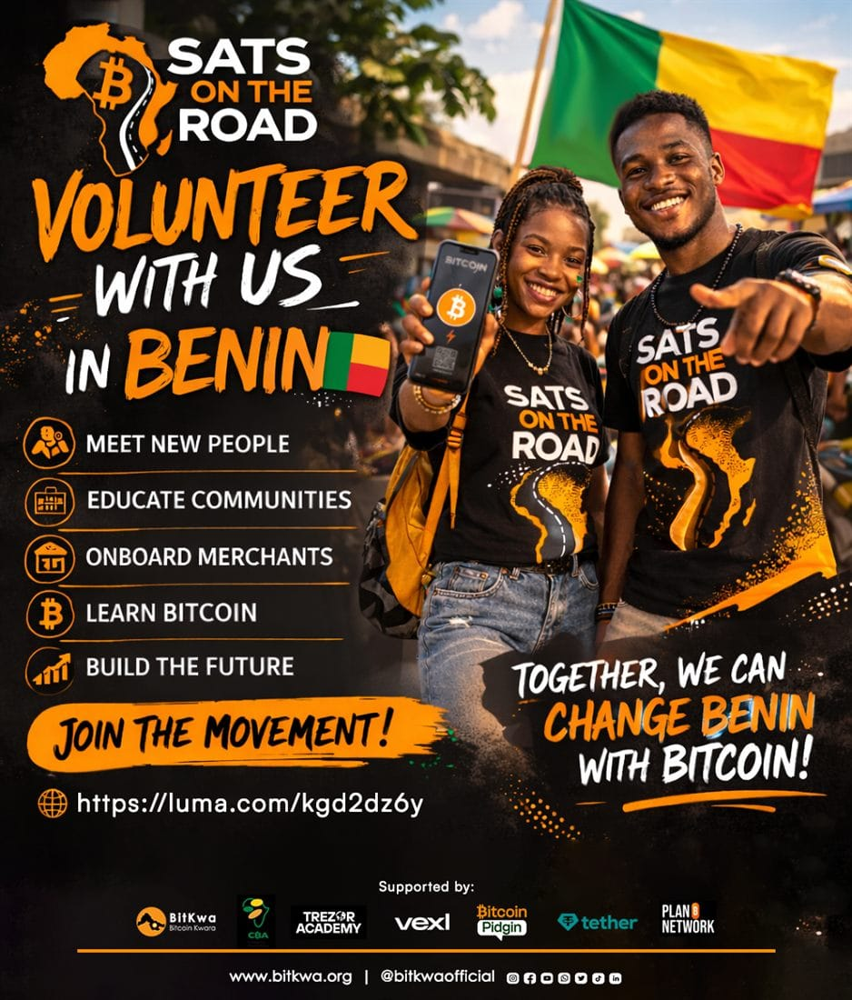

Cotonou, Benin · Day 19
"It's the first money I own without a bank's permission."
Aïcha runs a roadside fabric stall in Cotonou. We set her up with a Lightning wallet on a five‑year‑old Android, paid for two metres of wax print in sats, and watched her show three of her neighbours how to do the same before we'd finished our coffee.